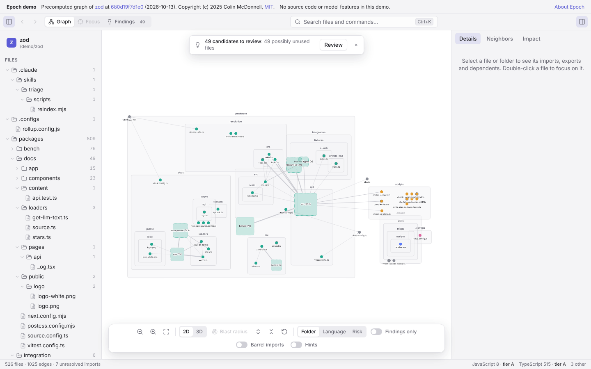

See the shape of
your codebase.
Epoch turns a repository into an interactive dependency graph. Trace the blast radius of a change, inspect risk tiers, and review likely dead features with evidence and caveats.
Local analysis · Read-only on your project · No account

Try the graph in your browser.
These graphs were generated once by Epoch's offline CLI at pinned commits. The demo has no backend, no source code, and no model features.
Each demo names its upstream repository, exact commit, and license. Epoch's candidate findings are prompts for review, never verdicts.
Get Epoch.
Free and open source. The builds aren't signed yet, so your system asks you to confirm the first launch once: how to open it.
Your code stays yours.
Parsing, graph generation, findings, and the default scorer run locally. Remote model features require your key and consent. The desktop app checks GitHub Releases for updates once a day unless you disable the check or turn on offline mode.
Read the data-flow table ↗